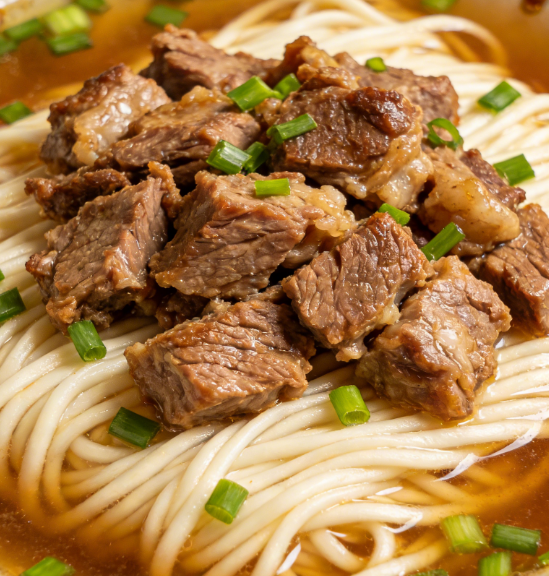
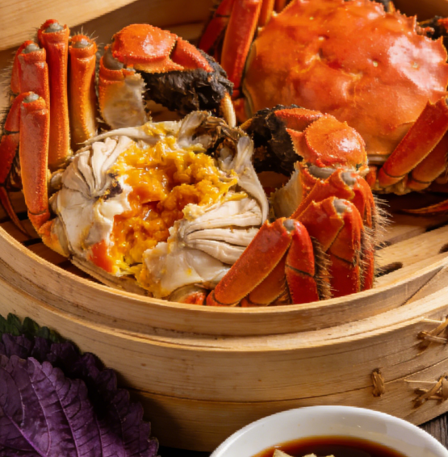
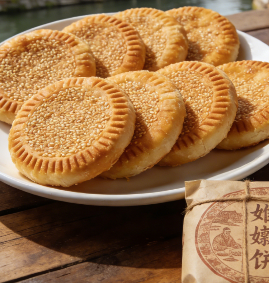
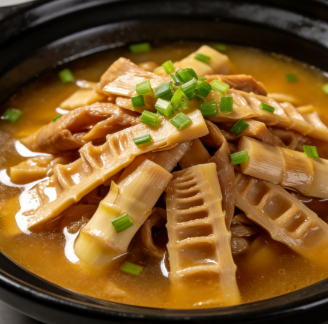

Signature Cuisine of Jiaxing

Jiaxing Zongzi
Jiaxing zongzi is the most iconic delicacy of Jiaxing, hailed as the "King of Zongzi." Originating in the Qing Dynasty, it is renowned for being glutinous but not mushy, rich but not greasy, tender and fragrant, with a perfectly balanced savory-sweet flavor. Jiaxing zongzi comes in several varieties including fresh pork, red bean paste, and salted egg yolk. The Fangfengzhai brand, in particular, enjoys nationwide fame and has become a culinary calling card for Jiaxing.
The craftsmanship behind Jiaxing zongzi is meticulous: premium glutinous rice is paired with fresh ingredients, wrapped using traditional techniques, and simmered for hours, allowing the flavors to fully meld into a soft, glutinous texture with an irresistible aroma. Every Dragon Boat Festival, Jiaxing hosts a Zongzi Cultural Festival that attracts countless visitors eager to sample these delicacies.
Nanhu Water Caltrop
Nanhu water caltrop is a specialty of Jiaxing's Nanhu Lake. Characterized by its hornless shape, it is also called the "hornless caltrop." With tender flesh and a refreshing sweet taste, it can be eaten raw, stir-fried, or made into soup, making it a beloved ingredient on Jiaxing dining tables.
Hangbai Chrysanthemum
Tongxiang Hangbai chrysanthemum is a specialty of Tongxiang in Jiaxing and one of China's four famous chrysanthemum varieties. With pure white petals and a delicate fragrance, it has the benefits of clearing the liver, brightening the eyes, and relieving heat, making it an excellent tea beverage.
Xitang Eight-Treasure Cake
Xitang Eight-Treasure Cake is a traditional pastry from Xitang Ancient Town, made from eight carefully selected ingredients. With its soft and glutinous texture and sweet fragrance, it is believed to strengthen the spleen and nourish the stomach, making it a beloved snack for all ages.

Pinghu Fermented Egg
Pinghu fermented egg is a traditional delicacy from Pinghu, Jiaxing. Made from premium duck eggs marinated in fermented rice wine, the egg white turns milky white while the yolk takes on an orange-red hue. With its mellow aroma and rich nutrition, it is a perfect accompaniment to meals.

Nanhu Drunken Shrimp
Nanhu drunken shrimp is a signature dish of Jiaxing, made with fresh river shrimp from Nanhu Lake marinated in yellow wine and seasonings. The shrimp meat is tender and succulent, infused with a rich wine fragrance that preserves the original flavor of the shrimp.

Tongxiang Mutton Noodles
Tongxiang mutton noodles are a specialty dish from Tongxiang, Jiaxing. Made with locally raised Huzhou lamb that has been slow-stewed until fork-tender, served over handmade noodles in a rich, savory broth, it is a heartwarming delicacy especially popular during winter months.

Fenhu Crab
Fenhu crab is a specialty of Fenhu Lake in Jiaxing. Known for its tender meat and rich, golden roe, it can be steamed, braised, or prepared in wine. As a distinctive local aquatic product, it rivals the renowned Yangcheng Lake hairy crab in quality and flavor.

Wuzhen Sister-in-Law Cake
Wuzhen Sister-in-Law Cake is a traditional pastry from Wuzhen, known for its crispy texture with a delightful balance of sweet and savory flavors that never feel greasy. Named after the legend of two sisters-in-law who created it, it is a must-try snack when visiting Wuzhen.

Wine-Braised Bamboo Shoots
Wine-braised bamboo shoots are a traditional Jiaxing dish made with fresh bamboo shoots braised in fermented rice wine. The shoots are tender and flavorful with a rich wine aroma, representing a classic vegetarian delicacy of the Jiangnan region.
Culinary Culture of Jiaxing
Jiaxing's cuisine is characterized by its Jiangnan water town heritage, emphasizing the freshness and natural flavors of ingredients. Cooking methods primarily include steaming, boiling, stewing, and braising, resulting in a light, fresh, and naturally sweet flavor profile. Jiaxing's food is not merely a gustatory delight but also a reflection of Jiangnan culture — every dish carries its own unique history and story. From street snacks to banquet feasts, everything showcases Jiaxing people's passion for food and their pursuit of a refined way of life.